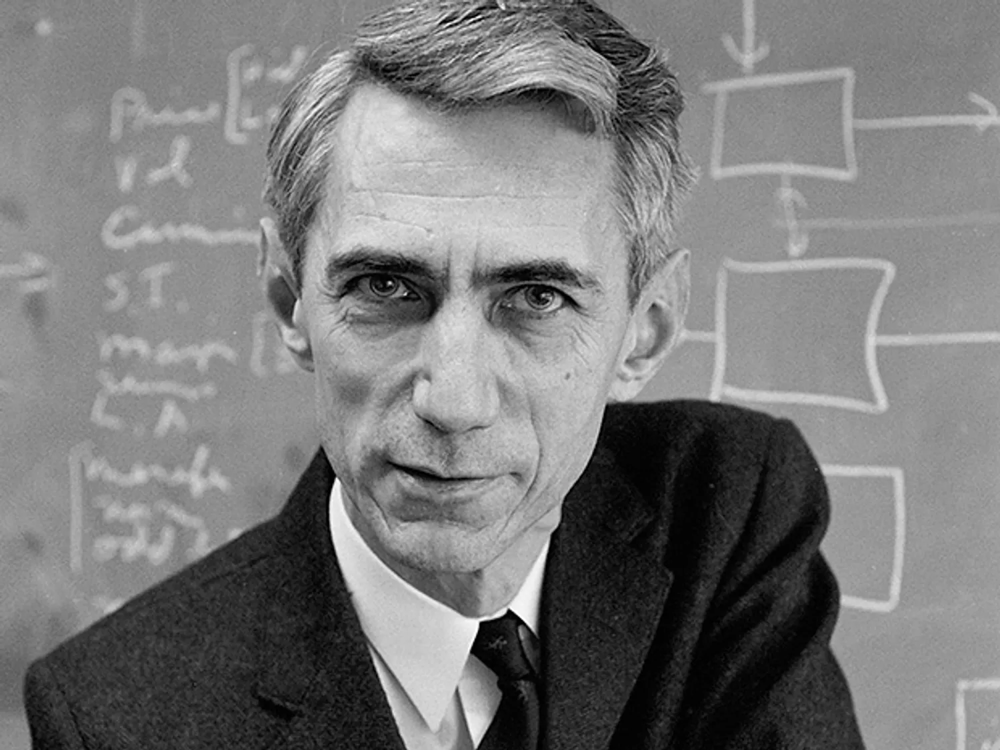

Summary
Claude Elwood Shannon (April 30, 1916 - Februray 24, 2001) was an American mathematician, electrical engineer, and cryptographer known as a "father of information theory".
As a 21-year-old master's degree student at the Massachusetts Institute of Technology, he wrote his thesis demonstrating that electrical appications of Boolean algebra could construct and logical numerical relationship. Shannon contributed to the field of cryptanalysis for national defense of the United States during World War II, including his fundamental work on codebreaking and secure telecommunications.
Childhood and Education
Most of the first 16 years of Shannon's life were spent in Gaylord, where he attended public school, graduating from Gaylord High School in 1932. Shannon showed an inclination towards mechanical and electrical things. His best subjects were science and mathematics. At home he constructed such devices as models of planes, a radio-controlled model boat and a barbed-wire telegraph system to a friend's house a half-mile away. While growing up, he also worked as a messenger for the Western Union company.
 Shannon's childhood hero was Thomas Edison, who he later learned was a distant cousin. Both Shannon and Edison were descendants of John Ogden (1609–1682), a colonial leader and an ancestor of many distinguished people.
Shannon's childhood hero was Thomas Edison, who he later learned was a distant cousin. Both Shannon and Edison were descendants of John Ogden (1609–1682), a colonial leader and an ancestor of many distinguished people.
Wartime research
For two months early in 1943, Shannon came into contact with the leading British mathematician Alan Turing. Turing had been posted to Washington to share with the U.S. Navy's cryptanalytic service the methods used by the British Government Code and Cypher School at Bletchley Park to break the ciphers used by the Kriegsmarine U-boats in the north Atlantic Ocean. He was also interested in the encipherment of speech and to this end spent time at Bell Labs. Shannon and Turing met at teatime in the cafeteria. Turing showed Shannon his 1936 paper that defined what is now known as the "Universal Turing machine". This impressed Shannon, as many of its ideas complemented his own.
At the close of the war, he prepared a classified memorandum for Bell Telephone Labs entitled "A Mathematical Theory of Cryptography", dated September 1945. A declassified version of this paper was published in 1949 as "Communication Theory of Secrecy Systems" in the Bell System Technical Journal. This paper incorporated many of the concepts and mathematical formulations that also appeared in his A Mathematical Theory of Communication. Shannon said that his wartime insights into communication theory and cryptography developed simultaneously and that "they were so close together you couldn’t separate them". In a footnote near the beginning of the classified report, Shannon announced his intention to "develop these results … in a forthcoming memorandum on the transmission of information."
 While he was at Bell Labs, Shannon proved that the cryptographic one-time pad is unbreakable in his classified research that was later published 1949. The same article also proved that any unbreakable system must have essentially the same characteristics as the one-time pad: the key must be truly random, as large as the plaintext, never reused in whole or part, and kept secret.
While he was at Bell Labs, Shannon proved that the cryptographic one-time pad is unbreakable in his classified research that was later published 1949. The same article also proved that any unbreakable system must have essentially the same characteristics as the one-time pad: the key must be truly random, as large as the plaintext, never reused in whole or part, and kept secret.